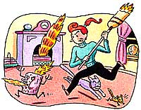

Last Laugh
What's a better way to spell "heartbreak"? Start with "hearth."
You'd think, during those gray wintry days and bone-chilling bouts of endless drizzle, that I'd build a fire in the fireplace. Yet, our fireplace sits cold and empty, with not so much as a wood chip clinging to its cast iron grate.
I've always thought that a crackling little heap of logs creates a cozy atmosphere, and every now and then, overcome by a fit of country "hearthiness," I've set out to make a blaze. Unfortunately, I'm one of those people who couldn't start a fire in a box of matches. In fact, I'm fairly sure that the police have permanently removed me from any list of potential arson suspects.
I haul in the logs, make a little mound of kindling, position each log carefully atop the kindling, leave plenty of air space so that-heaven forbid!-I don't smother my fire, and strike the match. Generally, I get a few spits of flame, great gusts of smoke, and hours of sullenly smoldering embers.
My husband, a former Eagle Scout, strides into the room, takes one look at the smoldering mass, fans it a few times with the Sunday supplements, and it roars to life and burns for days. So, one evening when he wasn't home, I grabbed a hefty fall clothing catalog, set to fanning, and singed off my eyebrows. Nothing else caught fire.
Those few fires I've succeeded in building generally erupted with a great roar long after I had abandoned them for dead. On one occasion, I kept adding newspaper, kindling, old jockey shorts, anything I could reach. Cinders and sparks gnawed holes in my offerings and disappeared. I yanked the screen across the fireplace and turned away in disgust. Suddenly, I heard a boom and the entire living room lit up. I turned around just in time to see a bonfire rocketing up the chimney. For several hours after, Kitty stretched out contentedly with his belly towards the blaze while I hunched in a chair nearby with the fire extinguisher in my lap.
Another of my great successes involved the "living log" which leaped out of the fireplace spitting glowing embers across the carpet. As I frantically swept tiny redhot particles back into the fireplace, one of the coals rolled across the top of my foot and ate part of my sock and the skin under it. It's now a staple at the family folklore round table discussions.
Then there was the "great critter chase." It seems that we have a chipmunk condominium in our log pile, a fact which escaped my attention until I nearly set fire to one tiny tenant. I'd hauled in a stack of logs, prepared the kindling, and had positioned the logs. Kitty was unusually interested in the ritual of fire preparation. I pried his nose off the logs at least six times, each time warning him that he ran the risk of becoming fur-fry.
Suddenly, a tiny item detached itself from a log and Kitty bounded into the fireplace-both events occurring just as I fired up a match. I rocked back on my heels, match aloft as if I were welcoming ships into New York Harbor. The "item" shot out of the fireplace, ran across my leg, and headed for the dining room, followed closely by a frenzied and foaming Kitty.
"Out of the fire, into the frying pan," I muttered as I finally cornered the enraged rodent, scooped him up, and sent him back outside to the woodpile. Deprived of toasted chipmunk, Kitty sulked by the back door, little beady eyes boring holes in the woodpile, no doubt praying for another fireside visitor.
Nowadays, even in the doldrums of February when that fantasy fire crackles so nicely in my imagination, I stick to lighting candles. Oh, sometimes I'll go upstairs and plug in my hair dryer. That's been good for a burst of flames on at least two occasions. Friends have suggested that I get one of those gas log things where you turn on the gas, light a match, and-poof!-you have a tidy little fire. Uh huh. Picture it. I turn on the gas. I light a match. And-poof. My neighbors will get cable reception off my fillings each time I orbit overhead.
|
 ILLUSTRATION: TIM HAGGERTY |
|
|